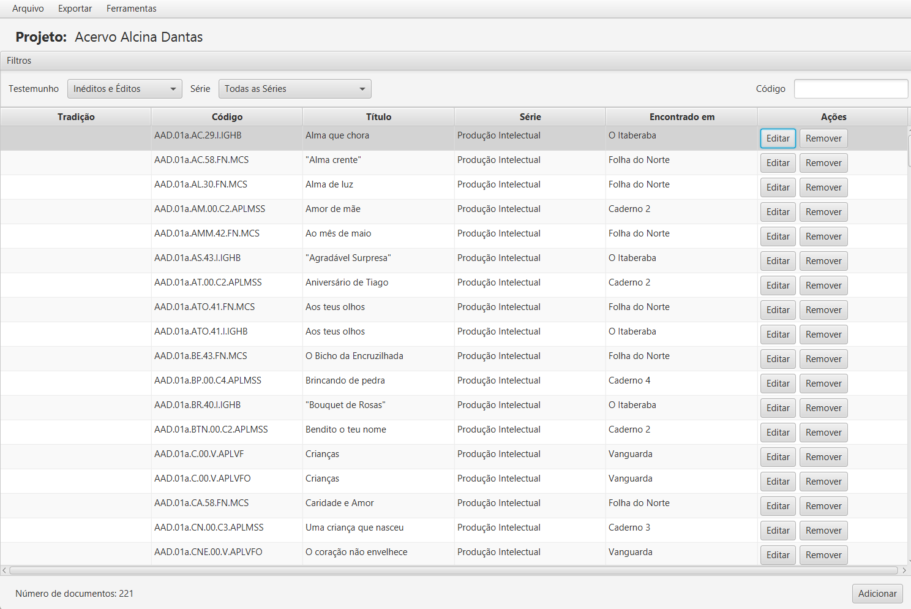
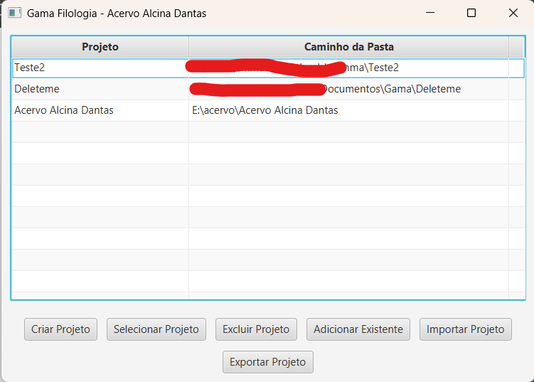
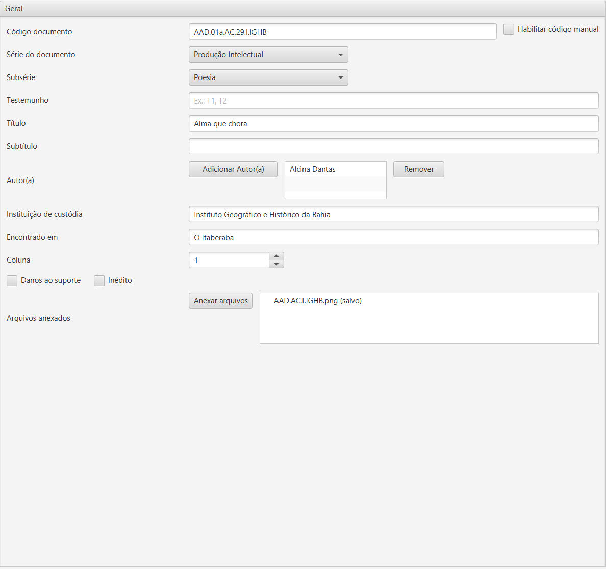
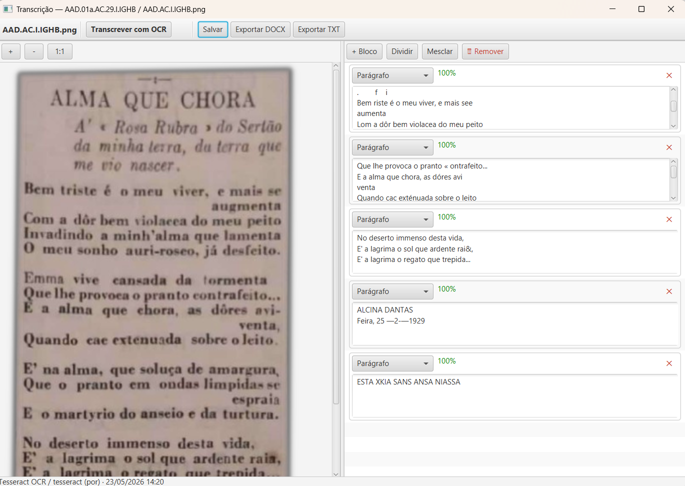
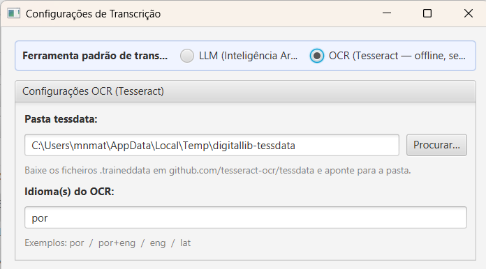
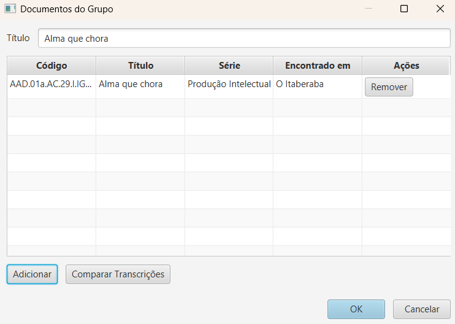
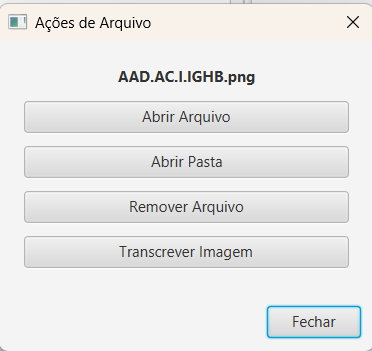

Software de Filologia Digital — Código Aberto
Gerenciamento de Acervos e Documentos Filológicos com Auxílio de IA
Ferramenta livre para organização, transcrição assistida por inteligência artificial e exportação de documentos do Acervo Alcina Dantas (AAD). Desenvolvida a partir de uma perspectiva dialógica entre Filologia, Arquivística e Tecnologias da Informação.
Instalador Windows (.msi) com Java 17 incluído — sem configuração prévia.
Recursos desenvolvidos para apoiar pesquisas de edição crítica e estudos filológicos sobre acervos documentais.
Formulário detalhado com classes, subclasses e geração automática de código de identificação único, conforme a norma NBR 6023.
Transcrição automática de fac-símiles via modelos de linguagem: Claude, GPT-4o, AWS Bedrock, Ollama, LM Studio ou Tesseract OCR (local, sem internet).
Geração de Inventário completo e Fichas-Catálogo individuais em formato .docx, prontas para publicação e arquivamento.
Confronto visual lado a lado entre transcrições: realce em amarelo para divergências textuais; em vermelho para blocos ausentes.
Suporte a documentos mono e poli-testemunhais, com indexação de pessoas, instituições e localidades mencionadas no texto.
Todos os dados são armazenados localmente em formato JSON. Não requer conexão de rede, conta em serviço de nuvem ou assinatura.
Visão geral das principais telas do sistema.







O sistema é distribuído como instalador Windows (.msi). Não requer instalação prévia de Java ou de dependências externas.
Clique no botão "Baixar Instalador" acima. O download do arquivo GAMA-1.2.5.msi iniciará automaticamente.
Dê duplo-clique no arquivo .msi e siga o assistente de instalação. Não é necessário instalar o Java separadamente.
Após a instalação, abra o GAMA pelo atalho criado no Menu Iniciar ou na Área de Trabalho.
Compatível com Windows. Java JRE 17 incluído no instalador. Ver todas as versões no GitHub.
O GAMA foi desenvolvido no contexto do projeto de pesquisa "Acervo Alcina Dantas (AAD): interação entre filologia, arquivística e tecnologias da informação e comunicação", coordenado por Pollianna dos Santos Ferreira Silva e Rosa Borges.
O sistema foi concebido a partir de uma perspectiva dialógica entre a Filologia e as TICs, buscando oferecer uma solução computacional adequada às necessidades metodológicas da crítica textual e da arquivística aplicada a acervos documentais.
O código-fonte está disponível sob a licença GNU AGPL-3.0, garantindo liberdade de uso, estudo, modificação e redistribuição.